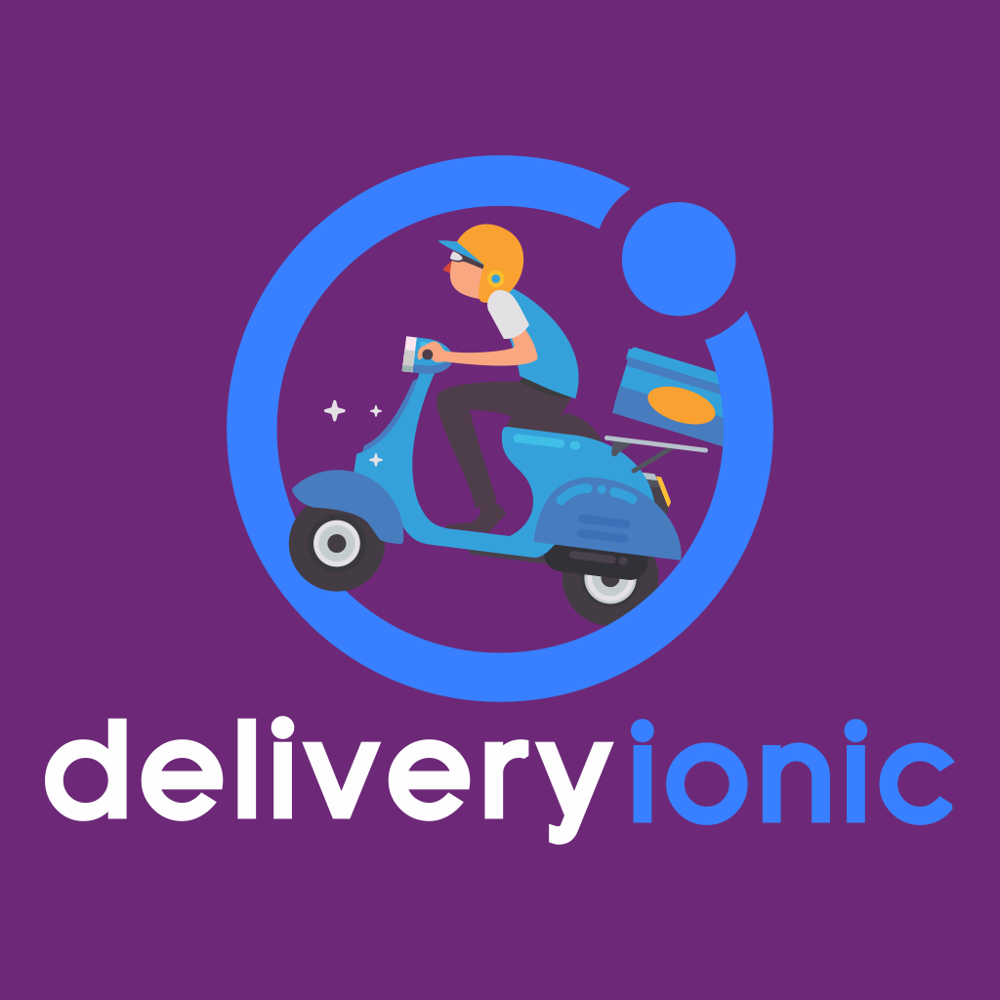

<ion-menu [content]="content">
  <ion-header>
    <ion-toolbar color="purple">
      <ion-title>Menu</ion-title>
    </ion-toolbar>
  </ion-header>
  <ion-content>
    <ion-list>
        
      <button ion-item (click)="openPage(newFood)" menuClose>
        Adicionar Prato
      </button>
    </ion-list>
  </ion-content>
</ion-menu>

<ion-nav id="nav" #content [root]="rootPage"></ion-nav>
